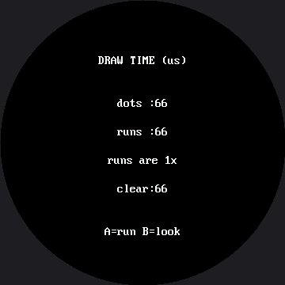

How Fast Is a Face?¶
The OLED kit ran this lab to compare a hand-written ellipse against framebuf's built-in one, and
the built-in won by a mile because it was compiled into the firmware and the hand-written one was
not. That is a fair race, and it has an obvious answer.
You cannot run that race here either, because this display has no built-in ellipse.
shapes.ellipse() is MicroPython, written in a file you can open. So the question changes into a
better one:
Both versions are MicroPython. Both walk the same math. One of them is much faster anyway. Why?
How much faster, on this board, is a number nobody has measured yet. The smartwatch kit's version of this lab found roughly ten times, but that figure was measured on a Pico driving a GC9A01 — a different controller, a different driver, and 57,600 pixels against this panel's 129,600. None of it carries over, so none of it is claimed here. The measuring machinery below is real and honest: run it, and the ratio it prints is your measurement of your board.
Same language, same math, a lot more speed
 This is my favorite result in the whole kit, because the answer is not "the fast one is written in C." Both of these are written in the same Python. Something else entirely is going on.
This is my favorite result in the whole kit, because the answer is not "the fast one is written in C." Both of these are written in the same Python. Something else entirely is going on.
Dots Against Runs¶
| Version | How it draws | Calls per filled eye |
|---|---|---|
| Dots | display.pixel(), one call per pixel |
~4,100 |
| Runs | shapes.ellipse(), one hline() per row |
73 |
Both send exactly the same 8,200 bytes of actual color. The difference is how many separate conversations each one has with the display.
The Ellipse Equation, Without Division¶
The dots version is worth reading on its own, because it contains a trick worth keeping. The ellipse equation says a point is inside when:
Division is slow and inexact, so multiply both sides out first. The same test becomes whole-number arithmetic with no division at all:
def dot_ellipse(cx, cy, rx, ry, color, fill, bottom_half=False):
rx2 = rx * rx
ry2 = ry * ry
limit = rx2 * ry2
# For an outline we keep the pixels that are inside the shape but NOT
# inside a shape one pixel smaller. What is left over is the edge.
inner_rx2 = (rx - 1) * (rx - 1)
inner_ry2 = (ry - 1) * (ry - 1)
inner_limit = inner_rx2 * inner_ry2
has_inner = inner_rx2 > 0 and inner_ry2 > 0
for dy in range(-ry, ry + 1):
if bottom_half and dy < 0:
continue
dy2_rx2 = dy * dy * rx2
for dx in range(-rx, rx + 1):
if dx * dx * ry2 + dy2_rx2 > limit:
continue # outside the ellipse
if not fill and has_inner:
if dx * dx * inner_ry2 + dy * dy * inner_rx2 <= inner_limit:
continue # inside the edge, so skip it
display.pixel(cx + dx, cy + dy, color)
Everything else in that function is just that one test, run on every pixel in the shape's bounding
box. The extra inner_* lines add a second, slightly smaller version of the same test, so this one
function can also draw an unfilled outline by subtracting a shape one pixel smaller — which is
exactly what this lab's mouth curve needs, since it is drawn as an open arc, not a filled disc.
A Benchmark You Can Trust¶
Two rules make a benchmark trustworthy, and both are in the code:
def time_drawing(draw, repeats):
"""Return the average microseconds one call to draw() takes.
Two rules make a benchmark trustworthy, and both are here:
1. Run it once first and throw that result away. The first call has
to allocate things the later ones reuse, so it is never typical.
2. Time several runs and average them. One reading of anything this
fast is mostly noise; an average is a measurement.
"""
draw() # warm-up, not counted
started = ticks_us()
for _ in range(repeats):
draw()
return ticks_diff(ticks_us(), started) // repeats
The full-screen wipe is timed separately, because both faces pay it and leaving it inside the comparison would hide the difference you are actually looking for. Expect it to be the biggest number on the screen: this panel is 129,600 pixels, which is 259,200 bytes over SPI — 2.25 times the smartwatch kit's 115,200-byte wipe, because area scales with the square of the side length, not the side length itself.
Here's the report on screen:

The numbers in that picture came from a simulated run with a fake clock, so they are not meaningful — the timings that matter are the ones your own board prints. Press A to run the benchmark and B to flip between the report and the two faces, so you can confirm you are comparing like with like.
Trust Your Board, Not a Screenshot
 Every timing number in this lab is a measurement of your hardware, at your baud rate, with your wiring. That is the whole point of building the instrument — so write down what your board says, not what a picture says.
Every timing number in this lab is a measurement of your hardware, at your baud rate, with your wiring. That is the whole point of building the instrument — so write down what your board says, not what a picture says.
Why Runs Win¶
Both versions are interpreted MicroPython. Both do about the same arithmetic. The difference is almost entirely in what they say to the display.
1. Fewer conversations. Setting a drawing window costs two commands and eight bytes, and it
happens on every display.pixel() call. A filled eye of radius 36 is roughly 4,100 pixels
(π × 36²), so the dots version pays that overhead 4,100 times to send 8,200 bytes of color. The runs
version pays it 73 times — once per row, since an eye of radius 36 is 73 rows tall — and sends
exactly the same 8,200 bytes.
2. Fewer Python function calls. A MicroPython method call is not free. 4,100 calls to pixel()
versus 73 calls to hline() is a real saving on its own, before a single byte reaches the wire.
Reason 1 is the big one, and it generalizes: on any device you talk to over a bus — a display, an SD card, a sensor, a network — batching your requests usually beats optimizing the work inside them. Both effects get worse as pixel count grows, and this panel has 2.25 times as many pixels as the smartwatch kit's — reason enough to expect the gap here to be at least as wide as it is there. But expecting is not measuring, and the ratio your own board prints is the only evidence that counts.
There Is a Third Tier — But Not Here¶
The smartwatch kit's GC9A01 has an escape hatch this lab can't reach. Russ Hughes also publishes
gc9a01_mpy — the same driver written in C and compiled
into a custom MicroPython firmware, with a real ellipse() built in. Installing it is roughly the
jump the OLED kit measured between hand-written and built-in code.
Nothing like that exists for the GC9B72. The only C implementation of this controller anyone has
published is an Arduino C++ driver — lib/gc9b72.py is MicroPython all the way down, with no
compiled alternative to switch to. On this panel, batching is the optimization, full stop. If you
ever outgrow it, the next step isn't a faster Python trick — it's writing the driver in C yourself.
Things to Try¶
- Predict the ratio before you run it. Write your guess down, then write down what the board
actually prints. Nobody has recorded that number for a GC9B72 yet, so yours is as good a
measurement as exists. (Careful: if you run this under
src/utils/check-labs.py, the clock is fake and the numbers it prints mean nothing — only a real board counts.) - Compare both drawing times to
face.clear(). Which dominates a frame for the dots face? Which for the runs face? The answer flips, and that flip is exactly why partial redraw mattered so much. - Make the eyes bigger — change
EYE_Rfrom 36 to 60 — and run again. The dots time grows with the area of the eye; the runs time grows with its height, because that is how manyhline()calls it makes. Growth rate matters more than any single measurement. - Turn the fast version into the slow one. Open
lib/shapes.pyand change the fill branch ofellipse()to usedisplay.pixel()in a loop. Three lines, and you have located exactly where the speed was living. - Time the other calls the same way. How long does one
fill_rect()take compared to drawing the same block with anhline()per row? You now own a method that answers questions like that in two minutes.
References¶
- Only Redraw What Changed — the other big speed lever on this display
- Drawing Ellipses — the function whose implementation this lab is racing
- Drawing Pixels — where the cost of one
pixel()call was first described - How Fast Is a Face? on the 1.2" kit — the same lab on the smaller 240×240 kit, where the roughly-10x figure above was actually measured